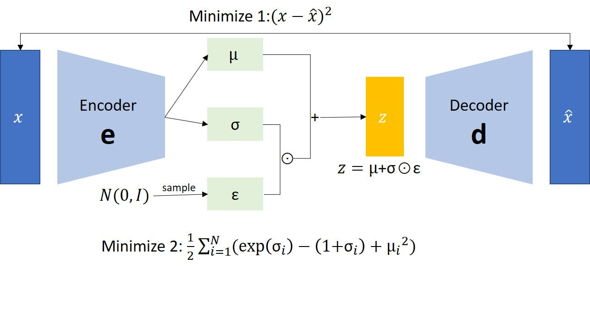

08: Auto-Encoding Variational Bayes (VAE )
 # Preliminary
1 VAE
1.1 Experiment
2 Summary
3 Key Concepts
4 Q & A
6 Preliminary
在这一节，我们先了解一些前置知识，以便我们可以更好的理解这篇文章。
6.1 Latent Variable Models
在深度学习中，我们经常处理 高维、复杂、带噪声的真实世界数据：图像、语音、文本…… 这些数据的背后，其实常常有一些 未被直接观测到的隐藏结构 —— 这就是 “Latent Variables”（潜变量）。
想象一下，你看一张人脸照片。照片是观测变量（observed variable）。 但是让这张脸“看起来像某个人”的，是一些不能直接看到的因素： • 光照（lighting） • 情绪（expression） • 姿态（pose） • 脸部特征（identity） • 背景（background）
这些因素虽然没有在数据中显式标注，却真实存在，并决定了我们看到的图像。 潜变量模型的目标，就是用数学方式把这些“隐藏因素”建模出来。

Latent Variable Model（LVM）是一类 假设观测数据是由一些隐藏变量生成的概率模型。 比如我们看到的数据\(\mathrm{x} \in \mathbb{R}^{d}\), 那它有相对应的隐藏变量 \(z \in \mathbb{R}^{k}\) 其中 \(k \ll d\) . \(z\) 是我们观察不到的，也就是所谓的 Latent Variable.
在使用Latent Variable Model时，我们有两个关键的任务： 1. Inference: 根据 \(\mathrm{x}\) 我们来推断出 \(\mathrm{z}\) 是什么，比如，给定一张人脸的照片，这个模型需要找出 - 这张脸是男生还是女生 - 表情是开心还是悲伤 - 是什么样的姿势 在数学上，就是求后验分布 \(p(\mathrm{z} | \mathrm{x})\) 2. Generation: 通过 \(\mathrm{z}\)， 我们来生成一个 \(\mathrm{x}\)。 这个就是生成模型。
Latent Variable Model 是现代生成式模型的基石，基本上所有的生成式模型，比如 GAN， DDPM， Flow Model 等，都是以Latent Variable Model为基础，在此条件下，通过不同求 Latent Variable 的方法，来解决这种问题。
6.2 AutoEncoder

AutoEncoder 是一种Self-Supervised Learning 的方法。 它可以让神经网络学会压缩，并且在还原数据，通过这种方法，我们可以学习到的低纬度的Latent Variable \(\mathrm{z}\)。 AutoEncoder 也可以看作是Latent Variable Model的一种学习方法。 AutoEncoder 也通常用在Representation Learning 表征学习。
6.3 KL-Divergence
KL 散度（Kullback–Leibler Divergence）是用来衡量两个概率分布之间差异的一种度量方法。定义如下: \[ D_{KL}(Q \| P) = \mathbb{E}_{x \sim Q}\left[ \log \frac{Q(x)}{P(x)} \right] \]
直观的解释KL-Divergence就是: - 如果数据 \(x\) 是从 \(Q\) 分布中来的，但如果我们用 \(P\) 分布 来解释这些数据，会损失多少信息量
对于高斯分布（Gaussian Distribution），我们KL- Divergence有以下的形式：
$$
D_{KL}(Q | P) = $$
如果是Diagonal Gaussian， 那么KL-Divergence 可以简化为： $$ D_{KL}(q ,|, p)
_{i=1}^{d} $$
\[ D_{KL}(q(\mathbf{z}) \ \| \ \mathcal{N}(0, I)) = \frac{1}{2} \sum_{i=1}^{d} \left( \mu_{q,i}^2 + \sigma_{q,i}^2 - \log \sigma_{q,i}^2 - 1 \right) \]
需要注意的一个点是，KL-Divergence是不对称的， \[ D_{KL}(Q \| P) \neq D_{KL}(P \| Q) \]
为什么我们要强调这一点，是因为： 对于不同位置的Q，P我们所求的是不一样的，简单来说，就是用 \(\|\) 后面的分布，来approximate \(\|\) 前面的分布，具体如下图。

6.4 Variational Inference
Variational Inference（VI，变分推断）是一种用可优化、易计算的分布来近似一个难以求解的后验分布，通过最小化两者之间的 KL 距离，从而实现高效概率推断的方法。 在 Latent Variable 模型中，我们想求： \[ p (\mathrm{z} | \mathrm{x}) = \frac{p(\mathrm{x}, \mathrm{z})}{p(\mathrm{x})} \]
通常 \(p(\mathrm{x})\) 是不可求的，因为: \[ p(\mathrm{x}) = \int p(\mathrm{x}, \mathrm{z}) d\mathrm{z} \] 通常是不可能直接求的。因此我们采取一种 “曲线救国” 的方式： 我们不去计算真正的后验，而是找一个 可计算并且可优化的分布来近似它： \[ q(z | x) \approx p(z | x) \] 实现起来也是很简单的 1. 选一个可计算的分布族 （Variational Family） 2. 让它尽可能的接近真实的后验： \[ \underset{\phi}{\min} D_{KL}(q_{\phi}(z | x ) \| p(z | x)) \]
直观的来说，Variational Inference 就是：不过不断拉升，旋转，一个椭圆型 \(q\), 来使它尽可能的可以和云朵形状的 \(p\) 来重叠
7 VAE
论文试图解决的核心问题是：
How can we perform efficient inference and learning in directed probabilistic models, in the presence of continuous latent variables with intractable posterior distributions, and large datasets Auto-Encoding Variational Bayes, p.1
如何在具有连续潜变量、后验分布不可解（intractable posterior）、以及大规模数据集（large datasets）情况下，在有向概率模型（directed probabilistic model）中，进行有效的推断（inference）和学习（learning）？  也就是说，当我们设定一个生成模型 p_(x,z) （观测 x、潜变量 z）但其后验 p_(z|x) 难以直接计算的时候，如何使用变分贝叶斯（variational Bayes）方法来进行近似推断，并且该方法能扩展到大数据、可用神经网络进行“编码-解码”结构使用。
Variational Autoencoder（VAE）是一类通过引入可参数化的变分分布 \(q_\phi(z|x)\) 来近似难以解析的真实后验 \(p(z|x)\)，并以连续潜变量为核心结构，从而实现对数据潜在空间的建模与可采样生成的深度生成模型。
我们有一些数据 \(\mathrm{x}_{1}, \dots \mathrm{x}_{n}\)， 希望计算 \(\log p_{\theta}(\mathrm{X}) = \sum_{i=1}^{N} \log p_{\theta}(\mathrm{x}_{i})\)  ## Evidence Lower BOund(ELBO)
## Evidence Lower BOund(ELBO)
Also known as variational lower bound
我们知道，对于高纬度的数据，我们不能直接求出所谓的 Likelihood。对于一个 data point, 我们有: \[ \begin{split} \log p_\theta(x) & = \log \int p_{\theta}(x, z)\ dz \\ & = \log \int p_{\theta}(x, z)\ \frac{q_\phi(z \mid x)}{q_\phi(z \mid x)}\ dz \\ & \geq \boxed{ \mathbb{E}_{q_{\phi}}[\log p_{\theta}(x, z) - \log q_{\phi}(z | x)] }\\ & = \mathbb{E}_{q_{\phi}}[\log p_{\theta}(x |z) + \log p_{\theta}(z) - \log q_{\phi}(z | x)] \\ &= \mathbb{E}_{q_{\phi}}[\log p_{\theta}(x | z) ] - \mathbb{E}_{q_{\phi}}\left[ \log \frac{q_{\phi}(z | x)}{p_{\theta}(z)} \right]\\ &= \mathbb{E}_{q_{\phi}}[\log p_{\theta}(x | z) ] - D_{KL}[q_{\phi}(z | x) \| p_{\theta}(z)] \\ & \approx \log p_{\theta}(x | z) - D_{KL}[q_{\phi}(z | x) \| p_{\theta}(z)] \end{split} \]
This is known as SGVB estimator > SGVB (Stochastic Gradient Variational Bayes) estimator can be used for ef- ficient approximate posterior inference in almost any model with continuous latent variables and/or parameters, and is straightforward to optimize using standard stochastic gradient ascent techniques. > Auto-Encoding Variational Bayes, p.1
我们可以看到，对于一个data point，我们可以通过这个ELBO来优化这个NN，对于一个 Batch的数据，我们则有: \[ \log p_{\theta}(X) = \sum_{i = 1}^{B} \log p_{\theta}(x_{i} | z) - D_{KL}[q_{\phi}(z | x_{i}) \| p_{\theta}(z)] \]
不过对于这个方法，存在一个问题就是 \(z\) 是从 \(q_{\phi}(z | x_{i})\) 中 sample出来的，对于这种类型的数据，我们不能计算它的Gradient，于是作者提出了 Re-parameterization Trick
7.1 Re-parameterization Trick
 如上图可见，\(z\) 是由 \(x, \phi\) 决定的。通过这种方式，那么我们改取怎么样的 \(g_{\phi}(x, \epsilon)\) 呢。文章中给出了3个基本的方法： 1. 方法1 2. 2 3. c
如上图可见，\(z\) 是由 \(x, \phi\) 决定的。通过这种方式，那么我们改取怎么样的 \(g_{\phi}(x, \epsilon)\) 呢。文章中给出了3个基本的方法： 1. 方法1 2. 2 3. c
对于 Re-Parametrization Trick是针对 \(z\) 是 Continuous的情况，如果 \(z\) 是离散（Discrete) 的 那么我们则可以使用 REINFOCE 的方法。
7.2 Amortized Inference
还有一个比较容易被忽略的一点就是，VAE 还运用了Amortized Inference。什么意思呢？
传统的变分推断中，我们需要为每一个观测样本 x 单独优化一个变分分布 q(z|x) 的参数，这意味着每来一个新样本都要重新做一遍变分优化，成本非常高。而在 VAE 中，我们不再为每个样本单独优化后验，而是训练一个 共享的推断网络（Encoder） 来预测 q_(z|x) 的参数。也就是说，模型通过学习一个函数 f_(x) 来一次性“摊销”所有样本的推断成本，使得对任意新样本 x，只需一次前向传播就能得到近似后验，不再需要昂贵的 per-sample 优化。这种方式极大地提升了推断效率，也让变分推断能够在深度学习规模上落地。
也就是用神经网络来一次性学习后验
 将上面的几个结合起来，我们就得到的了 Auto-Encoding VB Algorithm。
将上面的几个结合起来，我们就得到的了 Auto-Encoding VB Algorithm。
## 和 AutoEncoder的关系

7.3 Experiements
VAE Loss can be defined as this one:
class VAELoss(nn.Module):
def __init__(self, rec_loss="bce", kl_beta=1.0):
super().__init__()
self.rec_loss = rec_loss.lower()
self.kl_beta = kl_beta
self.eval()
def forward(self, x, x_recon, mu, logvar):
B = x.shape[0]
if self.rec_loss == "bce":
rec = F.binary_cross_entropy(x_recon, x, reduction="sum")
elif self.rec_loss == "mse":
rec = F.mse_loss(x_recon, x, reduction="sum")
# KL divergence: D_KL(q(z|x) || p(z))
kl = 0.5 * torch.sum(logvar.exp() + mu.pow(2) - logvar - 1)
total = (rec + self.kl_beta * kl) / B
return total, {
"recon": rec.detach().cpu() / B,
"kl": kl.detach().cpu() / B,
}The Loss curve and illustration examples:
8 Summary
总结一下，VAE 这篇文章 (Kingma and Welling 2022) 讲了写什么： VAE 通过ELBO 来优化 Latent Variable Model，通过 Re-parameterization trick 和 Amortized Inference，使得Latent Variable Model 在大数据集上得到显著的效果。VAE 为之后的很多生成式模型奠定了基础。
9 Key Concepts
| Concept | Explanation |
|---|---|
| Latent Variable Model | 用潜变量建模数据生成过程 |
| Variational Inference | 用可学习的分布近似后验 |
| Evidence Lower Bound (ELBO) | \(\log p(x)\) 的可优化下界, 通常 $$ |
| Amortized Inference | 利用一个 Encoder 网络来表示整体的变分推断 |
| Recognition Model / Encoder Network | 输出 \(z\) 的分布函数 \(p_\phi(z \| x)\) |
| Generative Model / Decoder Network | 从latent variable \(z\) 来生成 \(x\) \(p_{\theta}(x \| z)\) |
| AutoEncoder | 数据压缩的一种方法，让 |
| Re-parameterization trick | 使得梯度可以传递到Recognition Model里面 |
10 Q & A
Question 1: What is the machine learning framework of VAE-type models? VAE 属于 生成模型（generative model）+ 变分推断（variational inference） 框架。它将生成过程 p_(z) 和 p_(x|z) 与推断网络 q_(z|x) 结合，通过最大化 ELBO 来同时学习 和 。
Question 2: 在 VAE 中，为什么直接对 p_(x) 进行优化不可行？ 因为 p_(x) 里有一个对潜变量 z 的积分（或求和），通常是不可解析的： \[ \log p_\theta(x) = \log \int p_\theta(x, z)\, dz = \log \int p_\theta(x \mid z)\, p(z)\, dz \]
Question 3: reparameterization trick）是如何让 q_(z|x) 的梯度可计算的？
Question 4: 为什么 VAE 有时生成模糊？根本原因是什么？如何改进？